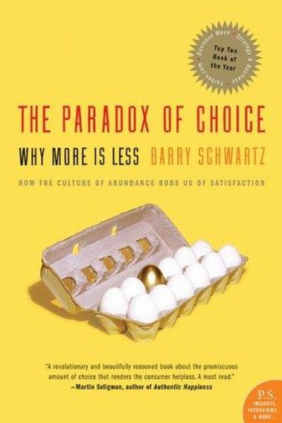

Library › Psychology & People
The Paradox of Choice — Summary & Key Lessons

Why more is less — the psychologist who showed that abundance of choice paralyzes us and makes us miserable.
📖 OPEN THE FULL INTERACTIVE BREAKDOWN →🌐 Read it in Hindi, Hinglish, Gujarati, Tamil & 22 more languages — free, with audio.
💡 The Big Idea
Barry Schwartz's countercultural thesis: we assume more choice = more freedom = more happiness — but the data says the opposite. Beyond a point, choice creates paralysis (we can't decide), dissatisfaction (we imagine the better option we missed), and rising expectations (nothing is ever good enough). His solution: become a satisficer — someone who accepts 'good enough' — instead of a maximizer, who exhausts themselves hunting the best. The good life is not about having all options; it's about choosing well with fewer.
🧠 The 5 Key Lessons
Lesson 1: The Paradox: More Choice, Less Happiness
When Choice Is Demotivating
Schwartz's famous jam study: a tasting booth with 24 jams drew more visitors — but the 6-jam booth sold 10x more. Abundant choice attracts attention and kills action. Beyond a threshold, options create paralysis, and after choosing, they create regret ('was the other one better?'). Choice is a tool, not a treasure.
📖 Example: The jam study became famous for a reason: shoppers froze at 24 options and bought at 6. The same pattern shows in 401(k) plans (every extra fund lowers participation), dating apps (endless profiles, no dates), and streaming (2 hours to pick a movie). Read the full example →
⚡ Do this: Cut one area of daily choice: a go-to meal list, a 3-outfit rotation, a default streaming pick. Notice what the freed attention feels like.
Lesson 2: Maximizers vs. Satisficers
Choosing and Choosing
Schwartz's core distinction: maximizers exhaustively hunt for the best option and accept nothing less; satisficers set a standard, find something meeting it, and stop. Research across jobs, products and relationships shows maximizers achieve objectively better outcomes — yet are less happy, more regretful, and more depressed. The best is the enemy of the good.
📖 Example: Studies of graduating students: maximizers landed better jobs with higher salaries — and were significantly less satisfied with them. The maximizer's endless comparison poisoned the prize they'd won. Read the full example →
⚡ Do this: Take the maximizer/satisficer test in your own life: pick one upcoming decision and set a 'good enough' bar in advance. When you hit it, stop — and savor, don't compare.
Lesson 3: The Regret Trap: The Road Not Taken
Regret
With more options come more imagined alternatives — and more regret. Anticipated regret freezes us before choosing; post-choice regret poisons the choice we made. Schwartz's data: maximizers feel regret more, because they can always imagine the better path. The cure: deliberately reduce your alternatives and commit to your choices.
📖 Example: Schwartz's research shows that people with fewer options report less regret about the same decisions — the more alternatives you considered, the more you second-guess. Commitment isn't just about the choice; it's about closing the door behind it. Read the full example →
⚡ Do this: Next choice, limit yourself to 3 options max. Decide, then write one line: 'I chose X for these reasons.' When doubt comes, reread the line — and don't reopen the door.
Lesson 4: Escalating Expectations: The Happiness Treadmill
When Expectations Are Self-Defeating
More options raise the bar for satisfaction: with 50 jeans, you expect the perfect pair, so even a great pair disappoints. Schwartz calls this the 'expectation treadmill' — abundant choice inflates standards, and reality can't keep up. The result is a society with objectively better stuff and subjectively lower satisfaction.
📖 Example: Schwartz's example: with the internet, we can find the perfect restaurant, the perfect hotel, the perfect partner-profile — and the gap between the imagined perfect and the actual real guarantees disappointment. The perfect is the enemy of the good. Read the full example →
⚡ Do this: Lower the bar on purpose this week: choose one 'good enough' option where you'd normally hunt for the best. Notice whether satisfaction actually drops.
Lesson 5: The Satisfaction Formula: Choose, Then Commit
What to Do
Schwartz's closing toolkit: satisfice more (good enough beats best), limit your options deliberately, make decisions non-reversible (reversible choices breed regret), practice gratitude (it blocks comparison), and lower expectations to realistic. Happiness is not about having the most options — it's about appreciating the choice you made.
📖 Example: The research on gratitude is the strongest happiness lever Schwartz knows: people who regularly count blessings report more satisfaction with the same lives. Gratitude is the antidote to the comparison machine. Read the full example →
⚡ Do this: Start a 3-line gratitude note tonight: what went well, what you're glad you chose, what you'll stop comparing. Repeat daily for 2 weeks.
✅ 5-Step Action Plan
- Cut one area of daily choice this week.
- Set 'good enough' bars in advance; stop when you hit them.
- Limit options to 3 and commit in writing.
- Lower the bar on one hunt-for-best decision.
- Keep a 3-line gratitude note for 2 weeks.
💬 Best Quotes from The Paradox of Choice
- “Learning to choose is hard. Learning to choose well is harder. And learning to choose well in a world of unlimited possibilities is harder still.”
- “The more options there are, the more we expect the choice to be perfect.”
- “Satisficers are happier than maximizers.”
Interactive version: mark lessons as read, listen in your language, share quote cards.